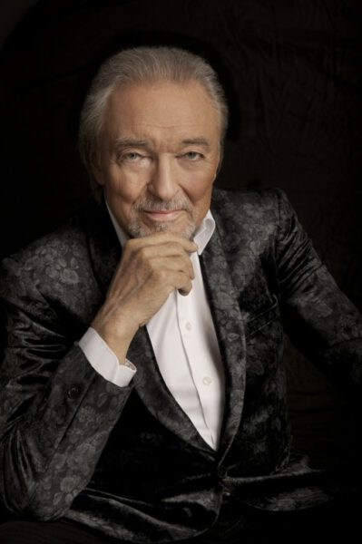

Slavná osobnost: Karel Gott
| Portrét | Základní údaje | Významné hudební díla | |
|---|---|---|---|
|  | Karel Gott |
Být stále mlád Srdce nehasnou Zvonky štěstí Ta pravá Včelka mája Babicka Kdepak ty ptáčku |
|
| Narození: 14. července 1939 | Úmrtí: 1. říjen 2019 | ||
| Byl český šlágrový zpěvák, herec a malíř. V letech 1965–2019 se prodalo
50 milionů nosičů hudebních alb s jeho nahrávkami.
V anketách Zlatý slavík a později Český slavík získal celkem 42 ocenění. Jeho nejprodávanější album byla deska Karel Gott, která byla nazpívaná v ruštině. Lidé ho přezdívájí za "Božského Káju." |
|||
| Karel Gott | |||
| Odkaz na wikipedii | |||
Značky a atributy tabulky
- <table>
- Značka označující celou tabulku.
- <thead>
- Značka označující záhlaví tabulky.
- <tr>
- Značka označující řádek tabulky.
- <td>
- Značka označující data tabulky.
- <th>
- Značka označující záhlaví tabulky.
- <caption>
- Značka označující popisek tabulky.
- colspan
- Atribut zajišťující rozpětí přes několik sloupců.
- rowspan
- Atribut zajišťující rozpětí přes několik řádků.